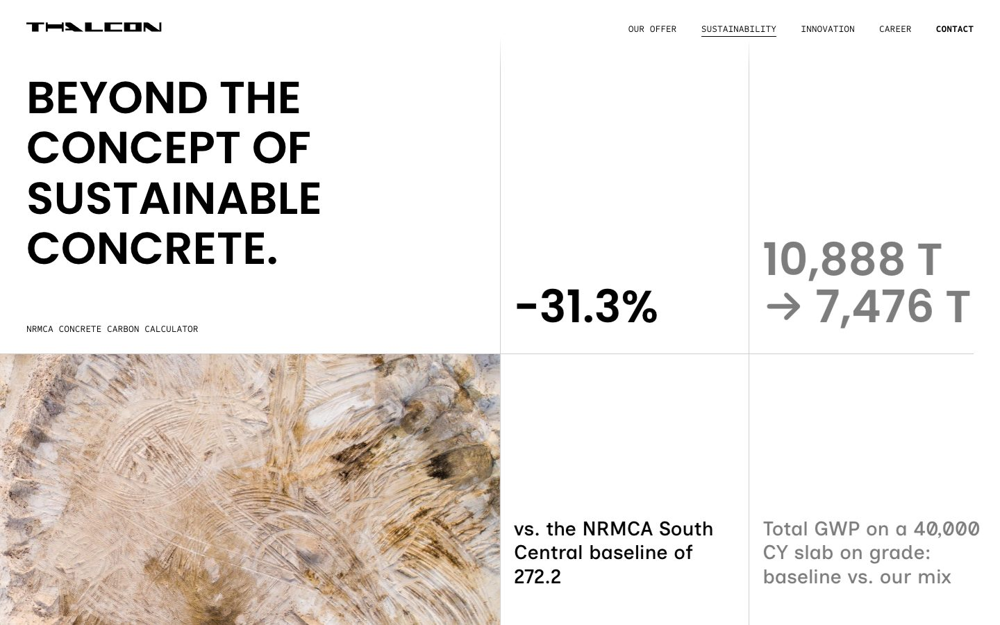

Stats
List · up to 8Each stat is one column in Sustainability. As visitors scroll, the columns slide left one at a time and the one on the left turns black.
- Value
- The big figure, like
186.9or−31.3%. - Second line
- Optional. A smaller part that goes on its own line under the value, like the unit
kg CO₂e/yd³. Leave it empty if the value stands alone. - Caption
- The sentence under the line. Keep it to about 10 words, or it runs to four lines.
The scroll length stays the same however many stats there are, so each extra stat passes a little faster. Three to five reads best.
